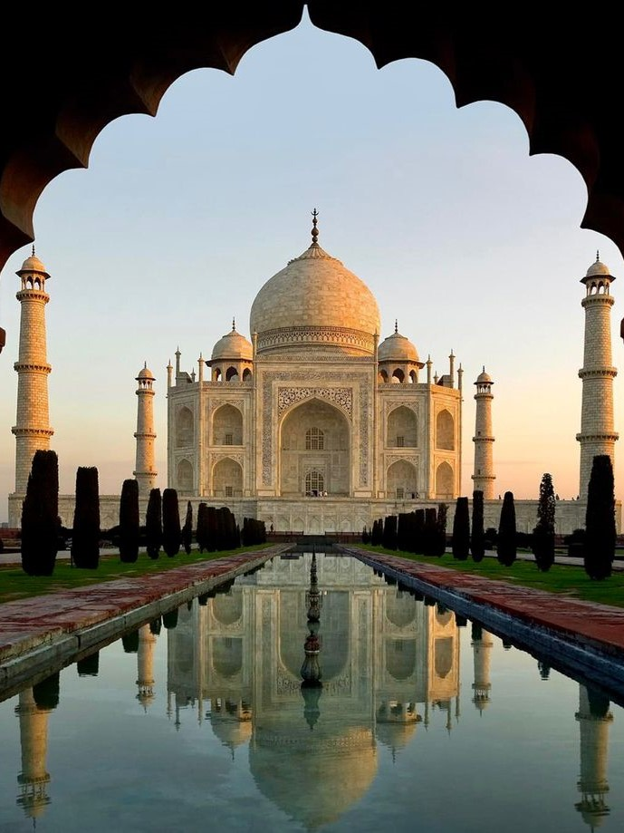

1. Taj Mahal, Agra, Uttar Pradesh
Overview
A UNESCO World Heritage Site, the Taj Mahal is an iconic symbol of love, built by Mughal Emperor Shah Jahan in memory of his wife Mumtaz Mahal.
Architecture
Constructed from white marble, the structure is adorned with intricate carvings and inlay work featuring semi-precious stones. The symmetrical gardens and reflecting pools enhance its beauty.
Visiting Tips
Best visited at sunrise or sunset to witness its changing hues. The complex also includes the Agra Fort nearby, which is worth exploring.